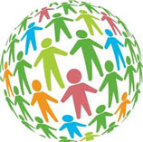

Work Experience
Learn more about my previous work experiences
Grey-box Software Development
At Grey-box, I'm working towards the development of the backend for the Project Codex Webapp, a cutting-edge initiative focused on medical translations. My responsibilities have included creating a comprehensive Schema diagram, which serves as the blueprint for the project's database structure. This database manages over 10,000 medical translations, ensuring that data is organized efficiently and accessible for various functionalities. I have implemented advanced fuzzy matching algorithms to enhance the accuracy and relevance of the translations, allowing the system to handle and reconcile diverse input variations. Additionally, I have been instrumental in developing the backend infrastructure of the application, ensuring seamless integration with the database and other system components. This includes rigorous testing and optimization to guarantee performance and reliability, critical for a project of this scale and importance. Through these efforts, I've helped establish a robust backend foundation that supports the project's goal of providing accurate and accessible medical translations for people in need.
BCEdAccess Society Web Development
At BCEdAccess Society, I played a pivotal role in leading the complete redesign of their website. This project involved a comprehensive overhaul of the site's layout, design, and functionality to create a more user-friendly and visually appealing experience. I focused on improving the site's navigation and content organization, ensuring that visitors could easily access information and resources. My work included optimizing the site for mobile devices, enhancing the overall user experience. As a result of these efforts, the redesigned website not only increased traffic but also significantly boosted donations. By implementing effective SEO strategies and integrating user-centric features, the site attracted more visitors and engaged them more effectively, leading to higher engagement and conversion rates. This project was a key factor in enhancing BCEdAccess Society's online presence and supporting their mission.